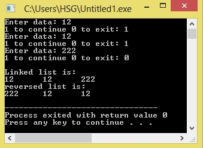

/*C Program to reverse LinkedList*/
#include<stdio.h>
#include<stdlib.h>
struct node
{
int num;
struct node *next;
};
void create(struct node **);
void reverse(struct node **);
void release(struct node **);
void display(struct node *);
int main()
{
struct node *p = NULL;
int n;
create(&p);
printf("Linked list is:\n");
display(p);
reverse(&p);
printf("reversed list is:\n");
display(p);
release(&p);
return 0;
}
void reverse(struct node **head)
{
struct node *p, *q, *r;
p = q = r = *head;
p = p->next->next;
q = q->next;
r->next = NULL;
q->next = r;
while (p != NULL)
{
r = q;
q = p;
p = p->next;
q->next = r;
}
*head = q;
}
void create(struct node **head)
{
int c, ch;
struct node *temp, *rear;
do
{
printf("Enter data: ");
scanf("%d", &c);
temp = (struct node *)malloc(sizeof(struct node));
temp->num = c;
temp->next = NULL;
if (*head == NULL)
{
*head = temp;
}
else
{
rear->next = temp;
}
rear = temp;
printf("1 to continue 0 to exit: ");
scanf("%d", &ch);
} while (ch != 0);
printf("\n");
}
void display(struct node *p)
{
while (p != NULL)
{
printf("%d\t", p->num);
p = p->next;
}
printf("\n");
}
void release(struct node **head)
{
struct node *temp = *head;
*head = (*head)->next;
while ((*head) != NULL)
{
free(temp);
temp = *head;
(*head) = (*head)->next;
}
}
Output:
